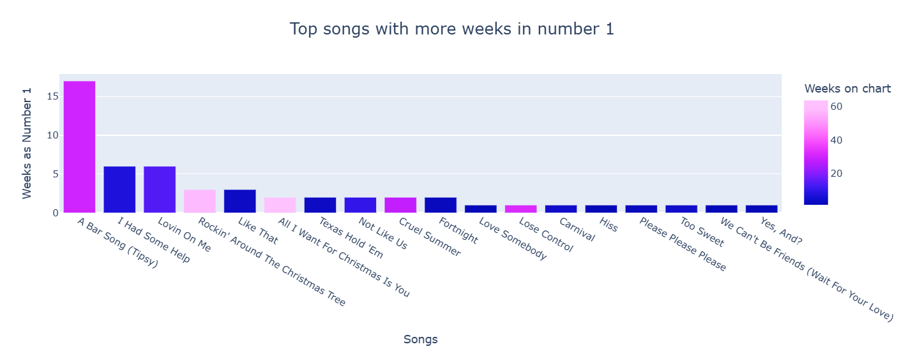
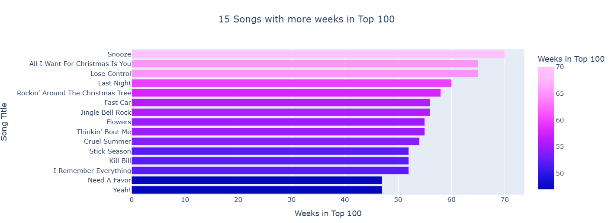
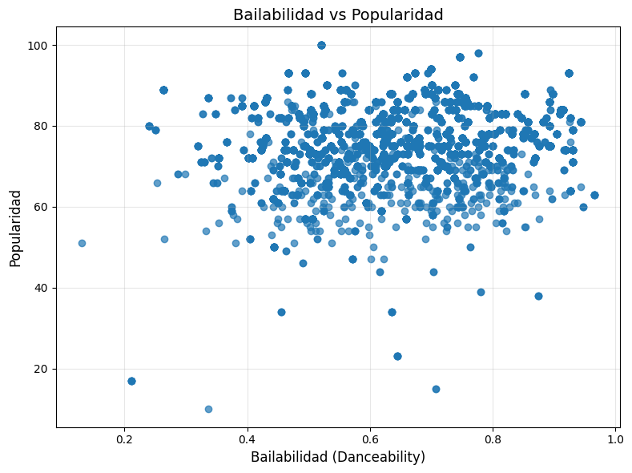
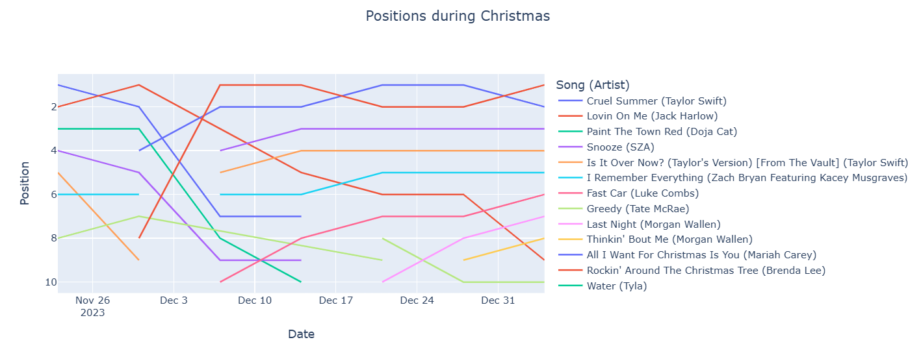
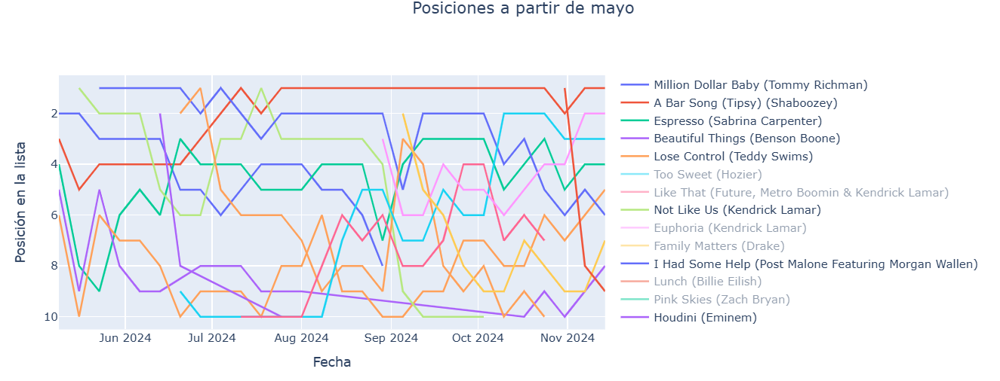
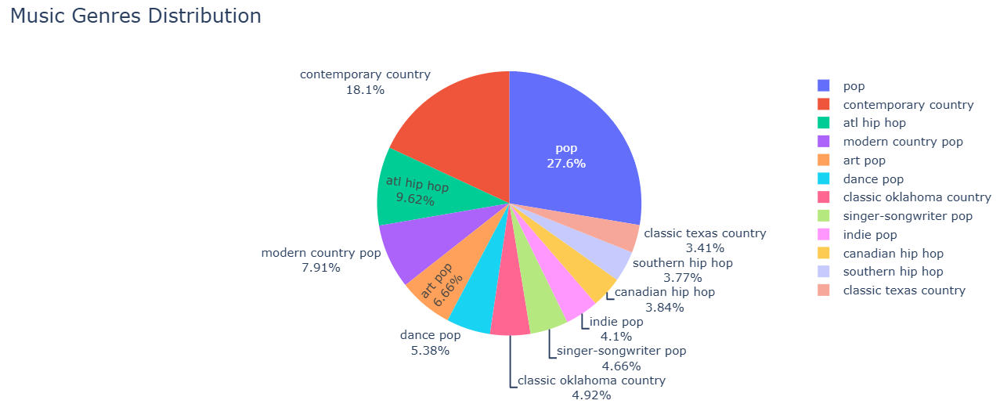
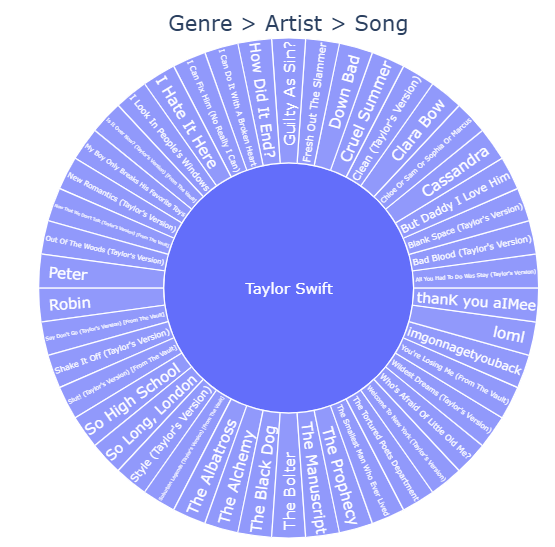

Data Analysis Python API Web Scraping Data Visualization Data base Airtable
Exploring Music Trends.
A data analysis project combining Billboard Hot 100 chart history with Spotify track metadata to explore hit songs, musical characteristics, genre representation, and how chart trends changed throughout the year.
Study period: November 2023 – November 2024 · Team project
01. The problem
What can chart history and track-level data tell us about the music that reaches a wide audience? This project investigates the relationship between Billboard Hot 100 performance and Spotify metadata, including popularity, danceability, energy, acousticness, speechiness, and tempo.
The analysis also looks at which songs stayed on the chart the longest, how seasonal listening patterns appear around Christmas, which genres were most represented, and whether Spotify popularity differed between selected genres. The aim was to identify useful patterns—not to assume that any single musical feature can explain a song’s success.
02. The data
The project brought together two main sources:
- Billboard Hot 100: weekly chart positions and chart-history fields collected through web scraping for the period from November 2023 to November 2024.
- Spotify API: track metadata and audio-related attributes for songs found in the Billboard data, including Spotify popularity, danceability, energy, acousticness, speechiness, and tempo. Artist genres were also explored where the API returned the required information.
The extracted data was cleaned and combined into a dataset for analysis and visualization. Track matching required care because titles and artist names were not always formatted consistently across the two sources. Some records could not be matched automatically, so the notebook includes manual corrections for selected tracks.
The analysis reflects the songs represented in the Billboard Hot 100 during this period. It should therefore be interpreted as a study of charting music, rather than a complete picture of all music released or listened to.
03. Methodology
- Extract: scrape weekly Billboard Hot 100 chart data and request Spotify metadata for the corresponding tracks.
- Transform: standardize track and artist fields, select relevant columns, handle missing values, remove duplicates, and derive track duration in seconds and minutes.
- Load: combine the Billboard and Spotify data and upload the resulting records to Airtable for storage and downstream use.
- Explore: use correlation heatmaps, scatter plots, histograms, radar charts, time-series charts, genre breakdowns, sunburst charts, and box plots to investigate patterns.
- Test hypotheses: compare Spotify popularity across selected genres, checking distributional assumptions before choosing a statistical test.
04. Key findings
Chart longevity and number-one hits
Eighteen songs reached the number-one position at least once during the study period. A Bar Song (Tipsy) by Shaboozey spent 18 weeks at number one and 31 weeks on the chart in the data analysed. Lovin on Me by Jack Harlow spent six weeks at number one, while I Had Some Help by Post Malone and Morgan Wallen spent six weeks at number one across seven weeks on the chart.

Looking at chart longevity more broadly, Snooze by SZA appeared for 70 weeks, Lose Control by Teddy Swims for 66 weeks, and All I Want for Christmas Is You by Mariah Carey for 65 weeks. These examples show that chart persistence and time at number one are related but distinct measures of performance.

Audio features and popularity
Most tracks in the dataset had Spotify popularity scores between 60 and 90. Danceability was generally above 0.4, and energy was commonly above roughly 0.4–0.5. Tempo values ranged from around 60 to 200 beats per minute, with many tracks concentrated between 80 and 140 BPM.
The danceability-versus-popularity scatter plot did not show a clear, strong relationship.
Many tracks with medium-to-high danceability also had high popularity, but this pattern
does not establish that danceability causes popularity. The radar chart comparing three
successful songs showed a similar profile: relatively high danceability and energy, and
lower acousticness and speechiness.

Seasonality and changing chart trends
The time-series analysis highlighted a seasonal shift around the Christmas period. Mariah Carey and Brenda Lee moved into prominent positions from late November, alongside other seasonal songs, and remained comparatively stable through the holiday period.

From around May 2024, the chart changed as newer hits—including A Bar Song, Beautiful Things by Benson Boone, and I Had Some Help—became prominent. The chart trajectories were more volatile than the Christmas-period trends, suggesting that seasonal listening and new releases are important context when interpreting chart movement.

Genre representation
Across the genre visualizations, pop, Atlanta hip hop, and contemporary country were among the most represented categories. The analysis also revealed many subgenres, making genre classification more complex than a small set of broad labels would suggest. Taylor Swift had 46 tracks represented in the chart data at some point during the period, while Future and Metro Boomin, Future, Morgan Wallen, and Luke Combs were prominent within other genre groupings described in the notebook.


Statistical hypothesis tests
The notebook compared Spotify popularity for pop tracks against Atlanta hip hop and contemporary country. Normality and variance checks indicated that the assumptions for a standard parametric comparison were not met, so the analysis used the non-parametric Mann–Whitney U test.
In both comparisons, the notebook reports p-values below the selected significance threshold and rejects the null hypothesis of equal popularity distributions at the 95% confidence level. This indicates statistically significant differences between the compared groups in this dataset. The notebook does not establish that genre itself causes those differences, and the results should be interpreted in the context of the sampled chart data.
Chart success does not appear to follow one simple audio-feature formula. Genre mix, seasonal listening, and the arrival of new releases all shape the chart over time. Combining chart history with track metadata makes these patterns easier to investigate, while also showing the importance of careful data matching and cautious interpretation.
05. Challenges and lessons learned
Data collection was one of the main challenges. Repeated requests to Billboard led to access blocks, requiring adjustments to request headers and request handling. The Spotify artist endpoint also became temporarily unavailable during the project, interrupting the retrieval of genre and follower information. Saving raw data checkpoints helped reduce the impact of these interruptions.
Matching records across sources was another difficulty: artist credits and track titles used different formats, particularly for collaborations. Cleaning text fields and matching tracks through Spotify IDs helped improve the process. Missing values also needed special treatment before loading records into Airtable.
The project reinforced the value of building resilient data pipelines: preserve raw extracts, checkpoint intermediate results, validate API responses, and document missing or manually corrected records. It also highlighted that statistical significance should be reported alongside the scope and limitations of the dataset.
06. Tools and technologies
Python was used for data collection, cleaning, analysis, statistical testing, and visualization. The workflow combined web scraping, the Spotify API, pandas-based data processing, plotting libraries, and Airtable for storing the consolidated dataset.
07. Explore the code
The notebook contains the extraction and transformation workflow, visual analysis, and statistical comparisons. Add the repository URL below once the project is published on GitHub.